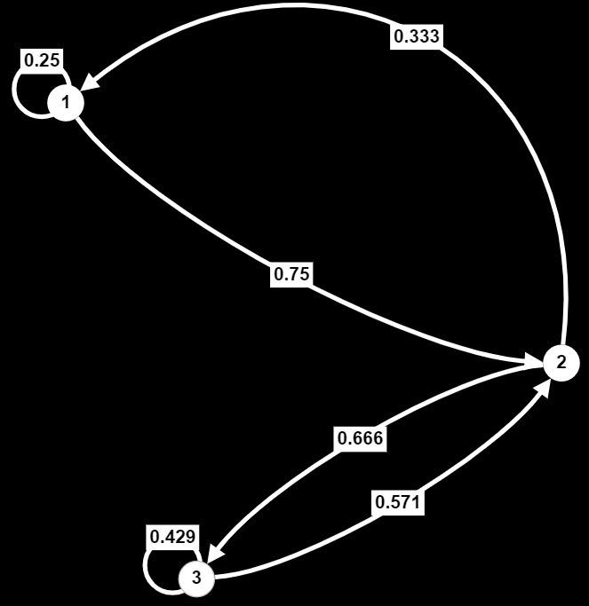

Jonathan Crofts
Nottingham Trent University
Recall that a Markov process on $n$ states
\[ \{S_1, S_2,\ldots, S_n\} \]is completely determined by the transition matrix
\[ P = \begin{bmatrix}p_{11}&p_{12}&\cdots&p_{1n}\\p_{21}&&&p_{2n}\\\vdots&&&\vdots\\p_{n1}&p_{n2}&\cdots&p_{nn}\end{bmatrix} \]whose entries give the probabilities of moving between states $i$ and $j$
Recall from Lecture 10 the simple Markov process given by
\[ P=\begin{bmatrix}0&1\\1&0\end{bmatrix} \]So that the state diagram is
This system does not settle down to a constant vector in the long term, in fact it oscillates between the two states
This is because the matrix $P$ does not have a dominant eigenvalue
Its eigenvalues are $\lambda_{1,2}=\pm 1$
There is a condition on the transition matrix that ensures that $\lambda=1$ is the dominant eigenvalue and so ensures convergence of the sequence
\[ \mathbf{x}_{k+1}=P^T\mathbf{x}_k \]We say that a matrix $P$ is regular if there exists an integer $\displaystyle r\in\mathbb{Z^+}$ such that $P^r$ has elements that are all positive i.e. $P^r_{ij} > 0 ~\forall i, j$
Clearly the matrix $\displaystyle P=\begin{bmatrix}0&1\\1&0\end{bmatrix}$ from our previous example is not regular since
\[ \begin{align*} P^2 &= \begin{bmatrix}1&0\\0&1\end{bmatrix} = I_2\\ P^3 &= \begin{bmatrix}0&1\\1&0\end{bmatrix} = P\quad\text{etc.}\quad \text{(at least 2 entries equal zero)} \end{align*} \]From the previous slide it should be clear that
\[ \begin{align*} P^r &= \begin{bmatrix}1&0\\0&1\end{bmatrix} = I_2 \quad \text{$r$ even}\\ P^r &= \begin{bmatrix}0&1\\1&0\end{bmatrix} = P\quad\text{$r$ odd} \end{align*} \]Proving that $P$ is not regular
If the transition matrix $P$ is regular then the sequence $\mathbf{x}_0, \mathbf{x}_1, \mathbf{x}_2,\ldots$ (resulting from $\mathbf{x}_{k+1}=P^T\mathbf{x}_k$) converges to a constant vector for almost all initial vectors $\mathbf{x}_0$
As we shall see, it is often convenient to use the state diagram to deduce whether a transition matrix is regular or not
Let
\[ P = \begin{bmatrix}0.2&0.8\\0.6&0.4\end{bmatrix} \]Then $P$ is clearly regular, just choose $r=1$
Its characteristic polynomial is given by
\[ \begin{align*} \chi_{P}(t)&=|P-tI_2|\\ &=t^2-0.6t-0.4\\ &=(t-1)(t+0.4)=0 \end{align*} \]i.e. the eigenvalues are $1$ and $-0.4$
Thus the system converges to a constant vector given by the left eigenvector of $P$ corresponding to the eigenvalue $\lambda=1$
To find the equilibrium solution of our problem we solve
\[ (P^T-I_2)\mathbf{u}=0 \]Or
\[ \begin{bmatrix} -0.8&0.6\\0.8&-0.6 \end{bmatrix}\mathbf{u}=\mathbf{0} \]Which solves to give
\[ \Biggl \{ \alpha\begin{bmatrix}3\\4\end{bmatrix}: \alpha\in\mathbb{R} \Biggr \} \]And so the equilibrium (or steady state) solution is given by
\[ \color{#00FF00}{\boxed{\color{white}{ \mathbf{x}^*=\begin{bmatrix}\frac{3}{7}\\\frac{4}{7}\end{bmatrix} }}} \]Remember to normalise to obtain a probability vector
Which of the following matrices are regular?
\[ P_1 = \begin{bmatrix}1&0\\\frac{1}{2}&\frac{1}{2}\end{bmatrix}\quad P_2 = \begin{bmatrix}\frac{2}{5}&0&\frac{3}{5}&0\\0&\frac{4}{9}&0&\frac{5}{9}\\\frac{1}{2}&0&\frac{1}{2}&0\\0&\frac{1}{3}&0&\frac{2}{3}\end{bmatrix} \quad P_3 = \begin{bmatrix}\frac{1}{4}&\frac{3}{4}&0\\\frac{1}{3}&0&\frac{2}{3}\\0&\frac{4}{7}&\frac{3}{7}\end{bmatrix} \]Perhaps the easiest way to tell is to draw the state diagrams
$P_2:$
$P_2:$
A certain Markov process is governed by the transistion matrix
\[ P = \begin{bmatrix}0.8&0&0.2&0\\0.2&0.6&0&0.2\\0&0&1&0\\0&0&0.4&0.6\end{bmatrix} \](a) If there are initially 200 elements in each of the four states, how many elements will be in each state after one transition?
(b) By drawing the state diagram corresponding to $P$, or otherwise, explain what eventually happens to an element that is initially in state 4
(c) For each state $i=1, 2, 3$ and 4, calculate the probability of an element moving from state 4 to state $i$ after $n$ transitions
(a)
\[ \mathbf{x}_1 = P^T\mathbf{x}_0 = \begin{bmatrix}0.8&0.2&0&0\\0&0.6&0&0\\0.2&0&1&0.4\\0&0.2&0&0.6\end{bmatrix}\begin{bmatrix}200\\200\\200\\200\end{bmatrix}= \color{#00FF00}{\boxed{\color{white}{\begin{bmatrix}200\\120\\320\\160\end{bmatrix}}}} \](b) Looking at the state diagram we see that an element in the fourth state can either move to the third state or stay in the fourth.
An element in the third state remains there since it is an absorbing state
Thus, an element in the fourth state moves to the third state and stay there
(c) For $i=1,2$ there is zero probability of an element moving from state 4 to state $i$, because state 3 is absorbing
For $i=4$ the only way to stay in state 4 after $n$ transtions is for the element to stay in state 4 for each individual transition. This occurs with probability $\left(0.6\right)^n$
For $i=3$ note that the probabilities must add up to 1 over all 4 states giving a probability of $1-\left(0.6\right)^n$